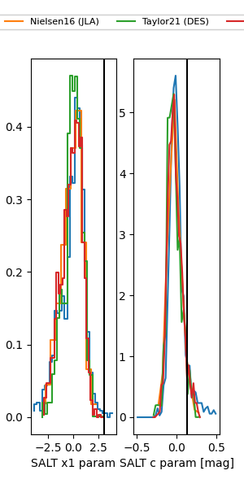

FINK: ZTF25abnmwof
Lasair: ZTF25abnmwof
ALeRCE: ZTF25abnmwof
TNS: 2025wvj
YSE: 2025wvj
ZTF25abnmwof (ztf,fink)
2025wvj (tns,yse)
equatorial (ra, dec) = (291.3535,+37.54436)
galactic (l, b) = (70.1556,+9.99928)

last atlasc=19.30, atlaso=19.37, ztfg=20.15, ztfr=19.49
2 atlasc, 3 atlaso, 14 ztfg, 7 ztfr detections